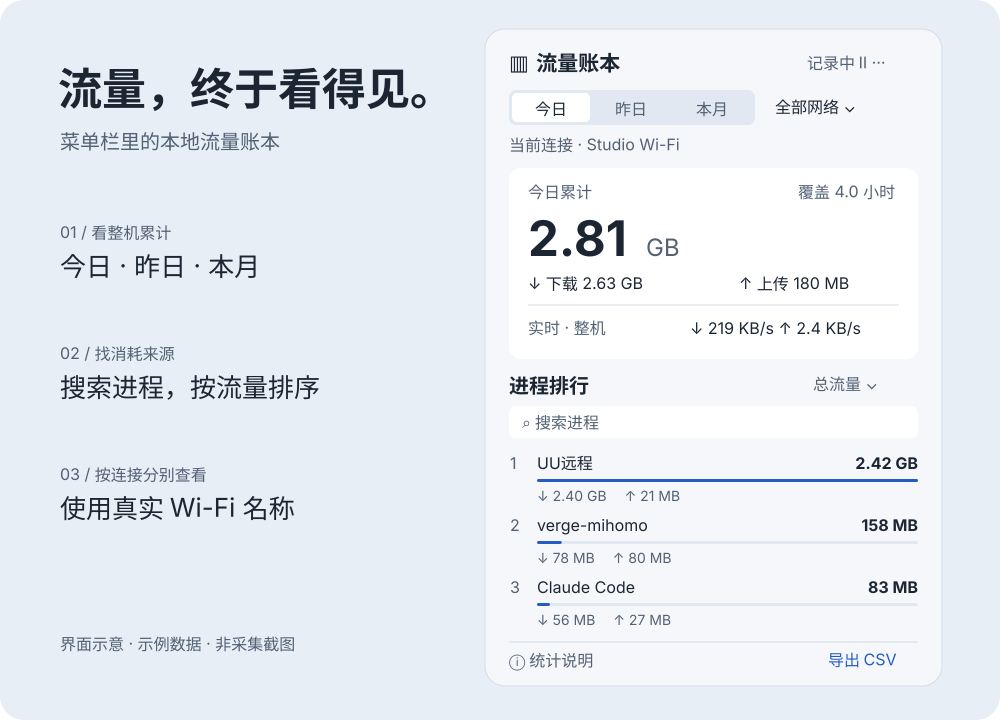

先看累计
切换今日、昨日和本月，分别查看下载、上传与总流量。采集覆盖时间让你了解记录是否完整。
MACOS 菜单栏工具 / V1.3.2
远程桌面、开发工具、代理转发。
从整机累计到每个进程，把 Mac 的流量去向看清楚。
macOS 13+ · Apple Silicon · 免费开源

从总量到来源
切换今日、昨日和本月，分别查看下载、上传与总流量。采集覆盖时间让你了解记录是否完整。
搜索进程名称，按总量、下载或上传排序。可识别的 App 辅助进程会合并，便于定位主要来源。
使用当前连接的真实 Wi-Fi 名称。定位权限可以拒绝；无法识别网络时，继续在全部网络下记录。
理解统计口径
网卡总量包含局域网。工具统计物理网络接口，排除回环和 VPN 虚拟接口，不能替代运营商账单。
历史从运行时开始。每 10 秒采样，每分钟保存。暂停、退出和睡眠期间不累计，无法补算过去的流量。
下载 arm64 ZIP，解压后将应用拖入“应用程序”。首次运行约 10 秒建立基线。
系统定位权限只用于读取 Wi-Fi 名称，不请求位置坐标。拒绝后仍可查看全部网络流量。
右键菜单栏图标可暂停／继续、设置登录启动、导出和退出；也支持 Control 点击。
不会。历史保存在本机 Application Support 下的 ledger.json，不记录通信内容；应用无需账号，不包含遥测。
当前安装包使用临时签名，尚未进行 Developer ID 签名与公证。确认下载来源后，可按系统设置“隐私与安全性”的提示允许打开，无需关闭系统安全功能。
先退出旧版，再替换应用并启动。历史文件路径不变，替换应用不会删除记录。
当前发布包仅针对 Apple Silicon。Intel 可尝试源码构建但未验收。采样式统计可能漏计短时进程和切换间隔，网卡包含局域网，因此不用于精确计费。
本机构建、签名和 30 项核心统计检查通过。开发沙箱限制真实网络采集和图形启动，菜单栏交互与定位授权弹窗尚未现场验收。